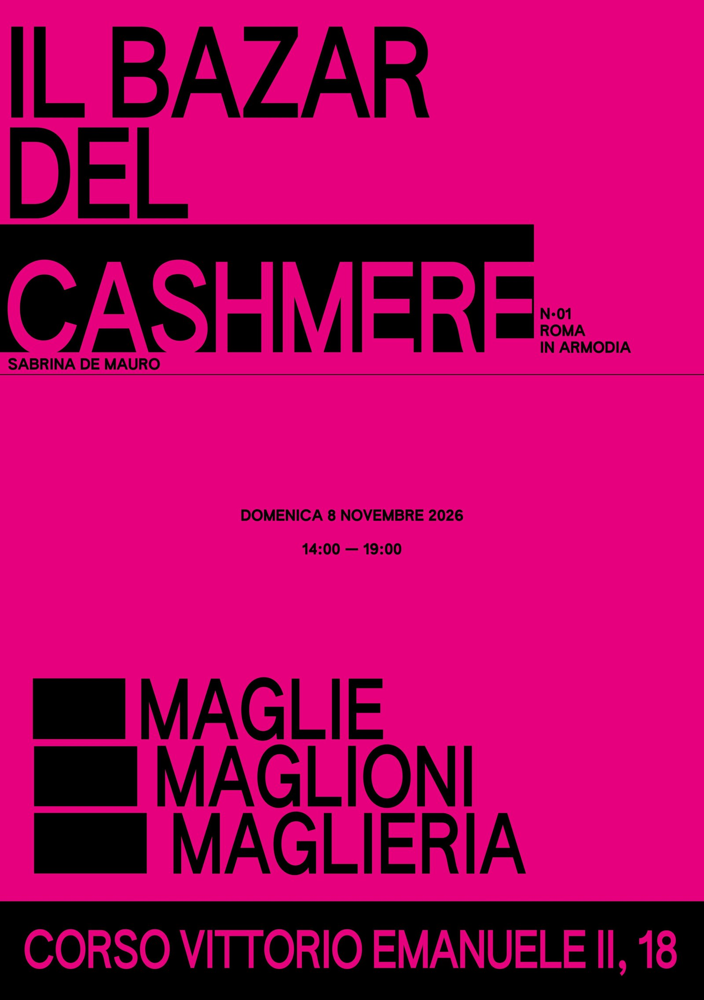

Il Bazar del Cashmere
Identità visiva per un mercatino itinerante di cashmere.

N°01 — Domenica 8 novembre 2026

N°02 — Domenica 22 novembre 2026
Il progetto
Il Bazar del Cashmere è un mercatino itinerante di maglieria in cashmere, organizzato da Sabrina De Mauro. Ne ho progettato l’identità visiva. Siccome il bazar si sposta, ogni appuntamento ha il suo numero, la sua data e il suo colore; la struttura tipografica invece resta la stessa, così si riconosce a ogni edizione.
La locandina nasce per avere un impatto aggressivo, quasi punk: lettere enormi e serrate, blocchi neri pieni, colori acidi. Il nome occupa tutta la parte alta; Cashmere esce in negativo da una fascia nera, come un’etichetta. La data è messa al centro, piccola, lasciando intorno una banda vuota: così il manifesto ricrea l’effetto di una busta da lettera, con l’indirizzo scritto in mezzo. La dicitura «maglie, maglioni, maglieria» è scritta ed enfatizzata in quel modo per ricordare il camioncino dell’arrotino, che passa per le strade elencando a voce alta quello che offre. L’indirizzo chiude il manifesto in una fascia piena.
I manifesti girano soprattutto su WhatsApp, verso un pubblico molto vario: per questo le informazioni sono poche e la gerarchia è netta, leggibile anche sullo schermo di un telefono.